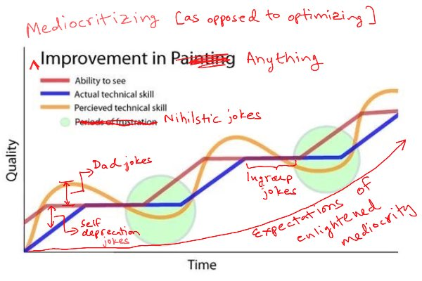

Chapter 6
My philosophy of mediocrity really started coming together last week, in the form of two tweets. First, a graph attributed to artist Marc Dalessio floated by my feed and I tweeted this modified and annotated version:

Second, a passing tweet by me seemed helpful enough to people that I did a double-take myself to see if I'd accidentally said something deeper than I'd thought:
A very compact way to explain mediocrity philosophy is this: non-attachment to finite games (5 words). Unfortunately those who can’t process the Carse reference will almost certainly misunderstand it.
Non-attachment to finite games. There's a lot packed into those 5 words if you have the context to unpack them. It sounds similar to "don't get stuck in local optima," but is actually a statement about openness of domains and unconstrained evolution in notions of utility (I did a short explainer on optimization versus mediocritization 2 episodes ago in this blogchain).
The reference is to finite and infinite games in the sense of James Carse. A finite game is when you play to win. An infinite game is when you play to continue the game. Non-attachment to a finite game means being free to reject both winning and losing. This generally happens when you are able to see and choose ways to keep the infinite game going that are orthogonal to the win/loss logic of a particular finite game. This posture can look like betrayal, cowardice, or choking to those who are attached to a particular finite game, which is why the connotations of mediocrity are invariably negative for finite gamers.
The idea of non-attachment here is critical, and is where subjectivity reshapes the meaning of "objective" cost or utility without an alternative notion of value necessarily ready at hand. Mediocrity is a leap of faith that there's more to life than whatever is going on right now. Whatever the hill, odds are, it's not the one you want to die on.
Taken together, the two provide a usable map and compass for a praxis of mediocrity. A map of the territory (emotional roller coaster of open-ended growth), with a depiction of a subjective path through it (modes of humor that work as coping mechanisms for each regime), and a compass to guide you through it (non-attachment to particular peaks or troughs, which are the wins and losses you must look past to continue the game).